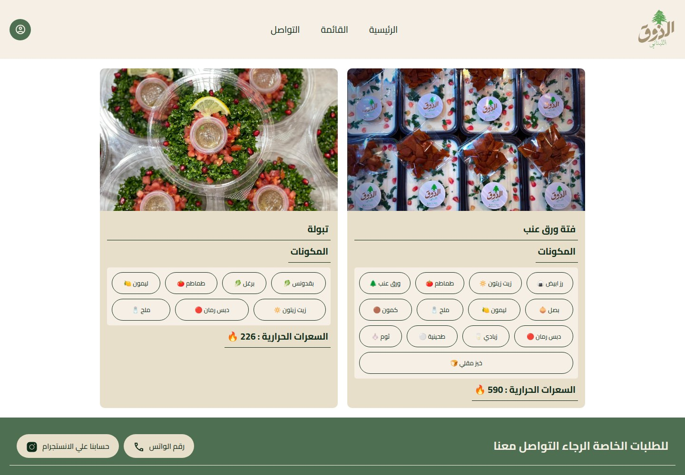
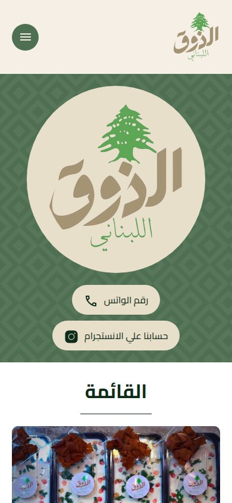
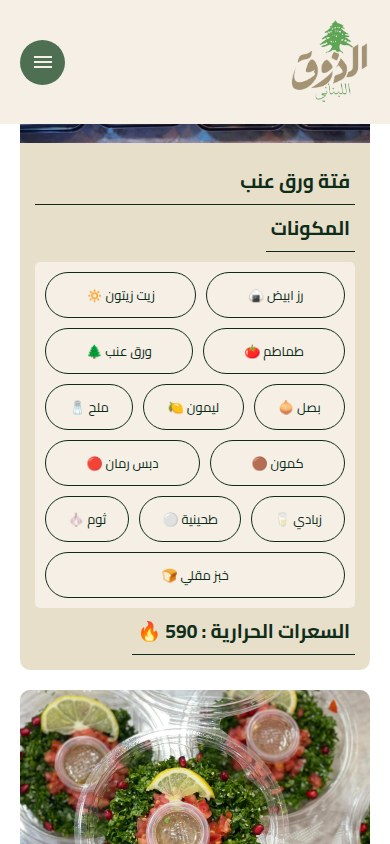
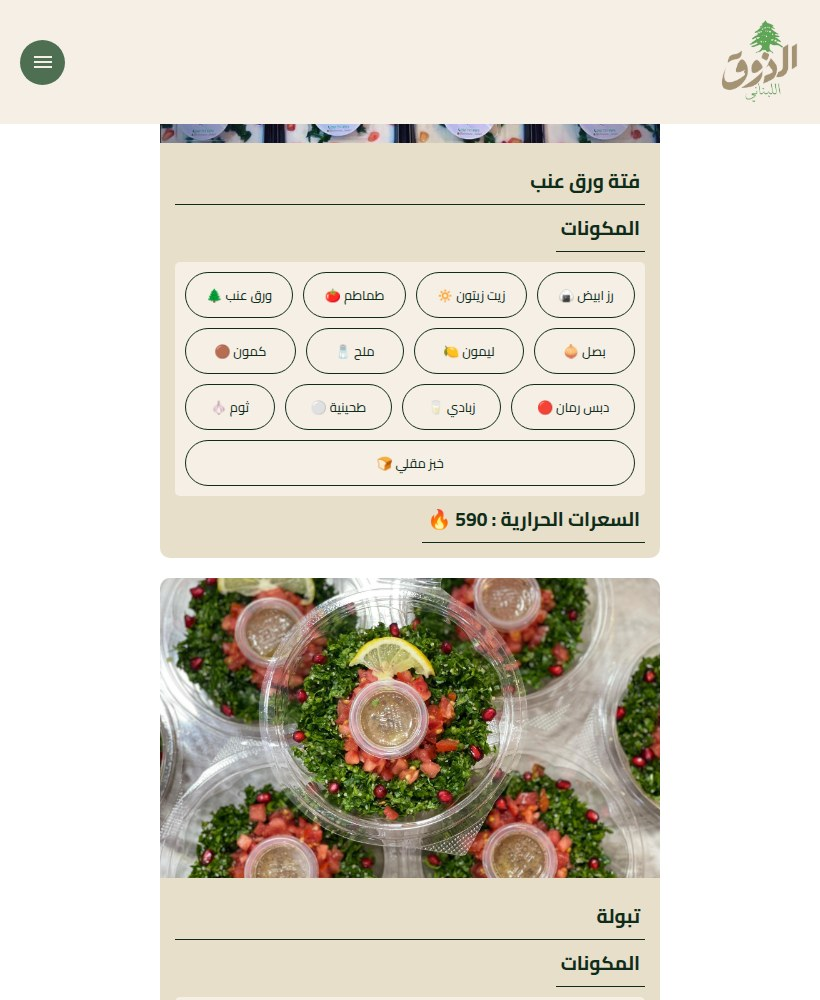
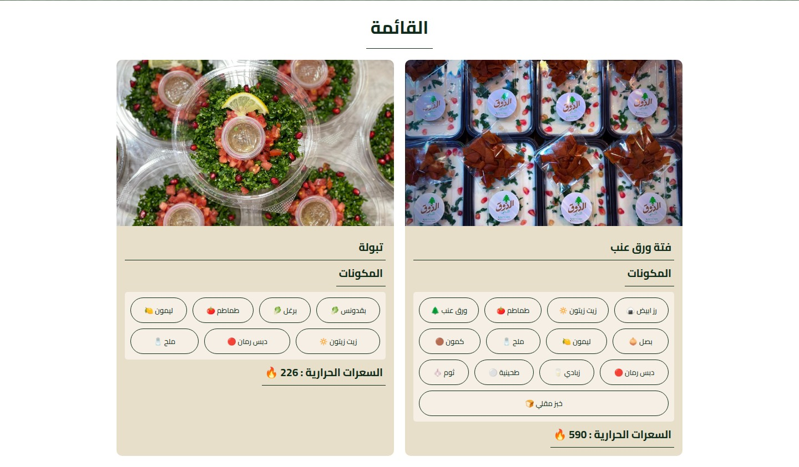
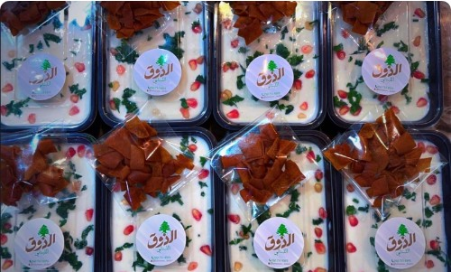
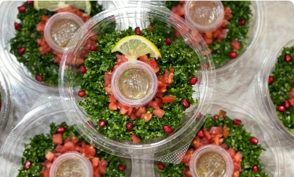

Labense Taste
A taste of Lebanon, made to share.

WHAT IT IS
Lebanese food menu with contact links for special orders
A one-page Arabic menu presents two dishes with food photos, ingredient lists, and stated calorie counts. It directs visitors with special-order inquiries to WhatsApp or Instagram. No ordering transaction is demonstrated on the site itself.
This case study documents what the linked website presents. Individual contribution to this project has not been confirmed.
WHAT THE WEBSITE OFFERS
- Arabic one-page navigation links to Home (Arabic text), Menu (Arabic text), and Contact (Arabic text), evidenced in the header and their working #hero, #menu, and #contact anchors.
- Brand/logo image appears in the hero and header; the hero uses a large circular Arabic logo.
- Menu card for Arabic text Arabic text Arabic text (grape-leaf fattah) includes a dish image and an ingredient list, evidenced in the #menu section.
- That dish displays a calorie count of 590, evidenced by the visible label Arabic text Arabic text : 590 🔥.
- Menu card for Arabic text (tabbouleh) includes a dish image and an ingredient list, evidenced in the #menu section.
- Tabbouleh displays a calorie count of 226, evidenced by Arabic text Arabic text : 226 🔥.
- WhatsApp contact links are visibly provided in the hero and contact/footer area, with the link label Arabic text Arabic text and a wa.me destination.
- Instagram links are visibly provided in the hero and contact/footer area, with the label Arabic text Arabic text Arabic text and an Instagram destination.
VISITOR JOURNEY
Use the header’s Home, Menu, and Contact links to jump to the corresponding sections on the same page.
AUTHENTIC SCREEN CAPTURES · 09
Inside the experience.
Genuine, distinct screen captures supplied for this project. No screenshots have been fabricated or duplicated.






